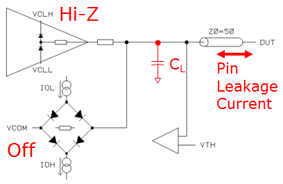
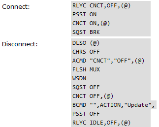
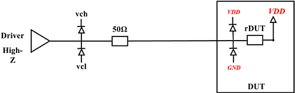
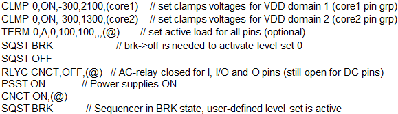
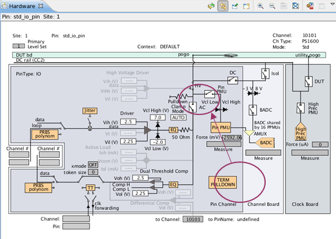
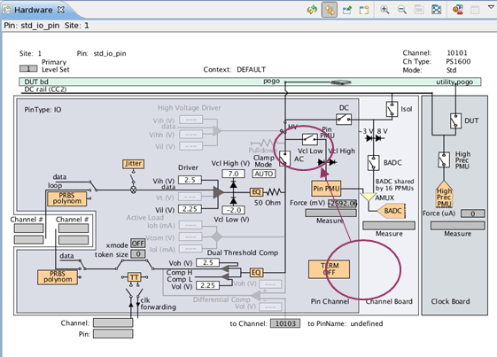

Level set 0: Protecting sensitive DUTs and DUT board circuitries from tri-stated digital channel voltage transients
Stefan Walther, Advantest
Gianluca Lombardi, Advantest
Clemens Leichtle, Advantest
Paper-ID: 135510 May 2012
Abstract
State-of-the-art (CMOS) SoC devices manufactured using the latest process nodes, 40 nm and smaller, have become more sensitive to voltage stress and latch-uph [1]; at the same time, complex SoC devices now feature multiple power domains with different VDD levels. For these reasons, newest devices demand more flexibility on ATE-systems to protect DUT and DUT board circuitries from voltage transients. This note discusses the underlying phenomena in detail, and gives clear recommendations on how to cope with these emerging technology requirements on the Advantest V93000 SOC test system.
Introduction
Electronic circuitries, including ATE pin electronics, leak small current, even when the drivers are tri-stated (high-Z state). The leakage current, which varies across ATE digital channel, will eventually charge the pin's internal capacitance [2] which will eventually discharge on the transmission line to the DUT or the DUT board circuitries directly connected to the tester (upon connecting the tester resources).

Figure 1: Simplified picture of pin electronics in high-Z with lumped node capacitance CL
When connecting tester resources (closing AC-relays and powering up DPS'), the device and DUT board circuitries may be electrically stressed by transient overvoltages/undervoltages, as electrical currents flow from higher to lower potential nodes; this may damage the DUT and/or DUT board components.
The traditional V93000 high-Z protection scheme relies on an "across-the-board"-fixed voltage clamping, and thus it does NOT provide a totally customizable -transient voltage protection.
This traditional scheme has perfectly worked in the last decade for the vast majority of CMOS processes and SoC devices; however, the newest semiconductor processes and highly-integrated, multi-power-domain SoC devices have shown to be more sensitive to voltage stress and latch-up. These devices may require a per-pin/per-DPS-customizable, power-domain-aware, transient voltage protection.
These new device requirements have been supported by a new SW feature, starting from SmarTest 6.5.2: here firmware commands (see TDC topic 119431) can be issued to redefine the default system-defined "level set 0" to control clamping and termination of high-Z state digital channels.
V93000 driver high-Z behavior and level setups
A V93000 driver in high-Z state floats to an arbitrary voltage, which typically varies from pin to pin, also depending on the pin electronics type; this voltage...
- is limited by the voltage rails or driver clamps, and affected by the active load, if programmed
- can be anywhere between the voltage rails or the pin electronics HW type typical maximum positive and negative voltage clamps
A V93000 digital driver pins is in a high-Z state when ...
- explicitly programmed by the user
- either during pattern execution (sequencer in "RUN" state)
- or when the sequencer is in "BRK" state, applying a user-defined high-Z break
waveform
Note that in the above cases, a user-defined fixed or equation-based level set is being used, that is, the user programs clamps and/or active load and has full control over the resulting (floating) voltage on a per-pin basis.
- sequencers are in "OFF" state (see TDC topic 119431), or the
drivers are explicitly switched to high-Z state via the firmware command DLSO (Driver Level Switch Off), which is typically executed during the default
CONNECT/DISCONNECT sequences shown in Figure 2 [3] - unless these are replaced
by user-defined sequences.
- In the case of default CONNECT/DISCONNECT sequences, a system-defined
"level set 0" is active. By default, this default "level set 0"does not
have active load enabled, and uses the same clamp value across all pins.
These clamps are set close to the min/max Z-clamp values supported by
the specific pin electronics HW type (see Table 1 below, as well as TDC
topic SetupLevelSet0).
Please note that PS1600 high-voltage (HV) pins, as well as PS9G- and PS3600 fast-mode pin drivers cannot be put in high-Z state, thus the voltage will not float: these pins will be clamped to 0V when "level set 0" is active.
- In the case of default CONNECT/DISCONNECT sequences, a system-defined
"level set 0" is active. By default, this default "level set 0"does not
have active load enabled, and uses the same clamp value across all pins.
These clamps are set close to the min/max Z-clamp values supported by
the specific pin electronics HW type (see Table 1 below, as well as TDC
topic SetupLevelSet0).
Parameter |
Ce-model |
P-model |
PS400 |
PS800 |
PS1600 |
PS1600 HV-mode |
PS3600 std-mode |
PS3600 fast-mode |
PS9G |
|---|---|---|---|---|---|---|---|---|---|
Vcl |
-2000 mV |
-100 mV |
-300 mV |
-1800 mV |
-2000 mV |
not programmable |
-100 mV |
not available |
not available |
Vch |
7000 mV |
5300 mv |
6200 mV |
6800 mV |
7000 mV |
not programmable |
4150 mV |
not available |
not available |
Active load |
disabled |
disabled |
disabled |
disabled |
disabled |
not available |
disabled |
not available |
not available |

Figure 2: Default connect and disconnect sequence (see TDC topic Defining connect/disconnect sequences)
Note that "level set 0" must not be confused with "fixed level set 1", which is the default level set when the sequencer is in "BRK" or in "RUN" state and either no level set has been selected as primary or no levels have yet been loaded (see Appendix A on "fixed level set 1").
Proper clamping based on device-specific power domains
Protection diodes inside the DUT typically turn on at ~0.6V; so the internal DUT-diodes typically clamp the voltages to VDD+0.6V and GND-0.6V. The ATE digital channel clamps should turn on a little earlier than the DUT diodes to prevent damage. A rule of thumb is to program the ATE-digital channel clamps to vch = VDD+0.3V and vcl = GND-0.3V.

Figure 3: ATE-channel clamps and connected DUT-pin protection diodes
Please note that VDD is power domain specific, therefore clamps need to be programmed on a per-power domain basis, i.e., all pins belonging to the same power domain must have the same clamping!
V93000 high-Z protection: changing system default "level set 0" settings
- Default system high-Z protection scheme:
As outlined above, the V93000 default high-Z protection methodology is governed by the system-defined "level set 0" which, as default, applies the same clamps across all pins.
- User-defined high-Z protection scheme:
If the user desires to customize the system-defined high-Z protection scheme to account for specific device/loadboard protection requirements, the user can access "level set 0" and modify the default values on a per-pin basis; specifically, the user has full control over the applied clamp values, as well as over the active load, via the following level setup firmware commands (see TDC topics CLMP, CLMP? - (CLaMP level) and TERM, TERM? - (TERMination mode))
CLMP 0,ON,clamp_v_low,clamp_v_high,(pin_group)
[clamp voltages] = mV
TERM 0,A,commutation_v,low_i,high_i,(pin_group)
[commutation_v] = mV
[low_i ]=[ high_i] = µA
When customizing the system default "level set 0"values, the following things must be observed:
- The "level set 0" settings, once changed, are activated only upon the next execution of the
firmware command SQST OFF or DLSO: thus, the redefinition of level set 0 clamps and
termination
CLMP 0,... TERM 0,...
must be followed by the FW-commands
SQST BRK SQST OFF
For example, the following will define the Level set 0 clamps and termination for "pin_group_1" and subsequently activate them
CLMP 0,ON,vcl,vch,(pin_group) TERM 0,A,vcom,iol,ioh,( pin_group) SQST BRK SQST OFF
In the above example the "level set 0" clamp levels are modified to vcl and vch mV and the active load to vcom mV commutation voltage with iol/ioh µA load current for pins in "pin_group".
- Downloading a levels file will restore the system default "level set 0" values, i.e. any modifications done by the user will be removed.
- "level set 0" firmware commands CANNOT be added manually into the levels file as
- This breaks any backward compatibility with earlier SmarTest versions which will not be able to load in the levels file
- User added "level set 0" firmware commands will be removed when the levels file is saved
- "level set 0" firmware commands are not supported by the Master File Handler
- "level set 0" firmware commands should not be used in a user-defined connect/disconnect sequence when running SmarTest in production mode because it negatively affects throughput
- Access to the "level set 0" via firmware-commands "CLMP 0,..." and "TERM 0, ..." is only supported on Pin Scale (Pin Scale 400, Pin Scale 800, Pin Scale 3600) as well as Smart Scale (Pin Scale 1600, Pin Scale 9G ) digital cards, but not on single-density cards (refer to Appendix B which discusses a solution for single-density cards ).
Recommended usage of "level set 0" firmware-commands
Production use case
For production, use the test method "miscellaneous_tml => TestControl => SetupLevelSet0" introduced in SmarTest 6.5.3 (see TDC topic SetupLevelSet0), which provides the template to modify "level set 0" default settings and the proper activation sequence.
This testmethod ...
- Should be called in the very first testsuite in the testflow
- Should be executed before the first connect is performed
- Can be skipped in any subsequent executions in order to ensure that there will not be any
negative impact on throughput
Please note that the special "Download" and "Init" testsuites cannot be used to call a test method to customize "level set 0" because, in production, these testsuites are executed before the levels file is downloaded (see TDC topic Special test suites), upon which, the tester restores the default "levelset 0".
(B) Engineering use case
For engineering , it is recommended to integrate the "level set 0" firmware commands into a user-defined connect sequence, as this ensures that any custom "level set 0" clamps are constantly applied - even after the user has saved the levels file, as soon as he/she presses the connect-button in the Eclipse Workcenter, even before executing the entire testflow:

Figure 3: Example for a user-defined connect sequence which modifies default "level set 0" clamp-values and enables the active load.
Conclusion
The Advantest V93000 SoC test systems allows the user to have full control over clamps and terminations of tri-stated digital pins on a per-pin basis. Although this has always been possible with the sequencer in "RUN" and "BRK"state, this capability has been further extended , starting from Smartest 6.5.2, to the "OFF"-state sequencers or the tri-stated drivers corner cases by the means of the "DLSO" firmware-command. This enhancement, which allows the user to modify "level set 0", was implemented to further protect the latest and more electrically sensitive technology node devices upon connecting ATE system resources to the DUT and to the DUT board circuitries.
To prevent electrical stress caused by transient voltages experienced by the DUT pins and the consequential irreversible damage, it is strongly recommended that the guidelines described in this paper are rigorously applied.
Appendix
Appendix A: "Fixed level set 1"
"Fixed level set 1" is the SmarTest default level set: whenever the sequencer is put into a/the "BRK"- or "RUN"-state, and the user does not specify any other fixed or equation-based level set as primary, this level set is used as level primary; the currently selected primaries can be checked by executing the SPRM, SPRM? - (Set PRiMary sets) firmware command. Please note that the user can overwrite the system default values of "fixed level set 1" via GUI or level firmware commands, see Table 2 for a subset of those values.
Parameter |
Ce-model |
P-model |
PS400 |
PS800 |
PS1600 |
PS1600 HV-mode |
PS3600 std-mode |
PS3600 fast-mode |
PS9G |
|---|---|---|---|---|---|---|---|---|---|
Vcl |
-2000 mV |
-200 mV |
-875 mV |
-1800 mV |
-2000 mV |
not programmable |
0 mV |
not available |
not available |
Vch |
7000 mV |
5200 mV |
5625 mV |
6800 mV |
7000 mV |
not programmable |
4250 mV |
not available |
not available |
Active load |
disabled |
disabled |
disabled |
disabled |
disabled |
not available |
disabled |
not available |
not available |
* Not programmable
Appendix B: special note on single-density digital cards
Access to the "level set 0" via firmware-commands CLMP 0,... and TERM 0, ... is only supported for Pin Scale and Smart Scale digital cards, but not for single-density cards (P- as well as Ce-models); for single-density cards, instead, the FW-command "LOFF" is provided which is introduced with SmarTest 6.3.5.3: this firmware-command, however, only allows to modify the clamp-values, but not the active load settings:
LOFF HIGHZ,clamp_v_low,clamp_v_high,(pin_group)
Here: clamp voltages in mV
When making explicit use of "LOFF" to change "level set 0" system default clamp-values, the following things must be observed:
- The modified clamp-settings are first activated upon the next execution of the firmware
command "SQST OFF "or "DLSO": thus, usage of "LOFF" should be directly followed by applying the
sequence of the FW-commands "SQST BRK" as well as "SQST
OFF":
LOFF HIGHZ,vcl,vch,(@) SQST BRK SQST OFF
In the above example the clamp-settings of "level set 0" will be changed to vcl and vch mV for all pins.
- The modified clamp-settings will not be restored to the default system values when downloading a levels file but only at the next "change device"-operation or when overwritten again via the "LOFF" firmware-command.
Appendix C: enabling the pulldown resistor available with Pin Scale 1600 with "level set 0" firmware commands
Pin Scale 1600 offers a pulldown resistor which can be enabled in any fixed and equation-based level set (including "level set 0") and which is activated (i.e. connected to the pin line) permanently independent on state of the driver (active or Hi-Z) or of the PPMU and which remains connected to the pin line even when the AC relay is opened (using RLYC command) or when the pin is disconnected by using standard disconnect sequence (requires enabling of pulldown resistor in level set 0 prior to execution of disconnect sequence). Please note that enabling the pulldown resistor, which is specified at 14.3KOhm +/-10%, has a similar effect like enabling a weak active load and programming the commutation voltage to 0V.
Starting with SmarTest 7.1.4.5, the pulldown resistor is enabled by default in level set 0 but it can be switched off by the user at any time by applying the appropriate TERM firmware command to level set 0:
TERM 0,OFF,NONE,,,,,,(pin_group) SQST BRK SQST OFF

Figure 4: Hardware-monitor showing enabled pull down resistor for PS1600
and disabled via
TERM 0,OFF,NONE,,,,,,(pin_group)

Figure 5: Hardware-monitor showing disabled pull down resistor for PS1600
Reference
[1] See, http://en.wikipedia.org/wiki/Latchup
[2] Typical V93000 digital channel cards pin capacitance is 2pF to 10 pF
[3] These sequences are executed for example before the first testflow execution, during binning, or at the end of the testflow execution and more.